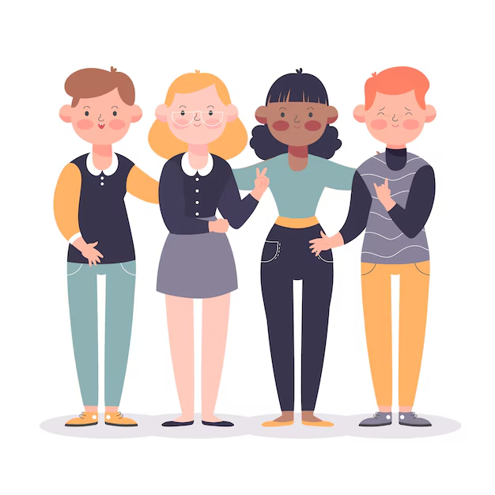

Qui sommes-nous ?
Éco-Jeun's est une association portée par des jeunes accompagnés par le pôle jeunesse d'O'Survie, engagés pour l'écologie citoyenne et la solidarité sur le territoire de Plaine Commune (93). À travers des ateliers de sensibilisation, des actions participatives (nettoyages, fresques, collectes, débats) et des espaces de créativité, ils prennent leur place dans la société de manière concrète et visible. (a venir)Éco-Jeun's est une association portée par des jeunes accompagnés par le pôle jeunesse d'O'Survie, engagés pour l'écologie citoyenne et la solidarité sur le territoire de Plaine Commune (93). À travers des ateliers de sensibilisation, des actions participatives (nettoyages, fresques, collectes, débats) et des espaces de créativité, ils prennent leur place dans la société de manière concrète et visible. (a venir)Éco-Jeun's est une association portée par des jeunes accompagnés par le pôle jeunesse d'O'Survie, engagés pour l'écologie citoyenne et la solidarité sur le territoire de Plaine Commune (93). À travers des ateliers de sensibilisation, des actions participatives (nettoyages, fresques, collectes, débats) et des espaces de créativité, ils prennent leur place dans la société de manière concrète et visible. (a venir)
